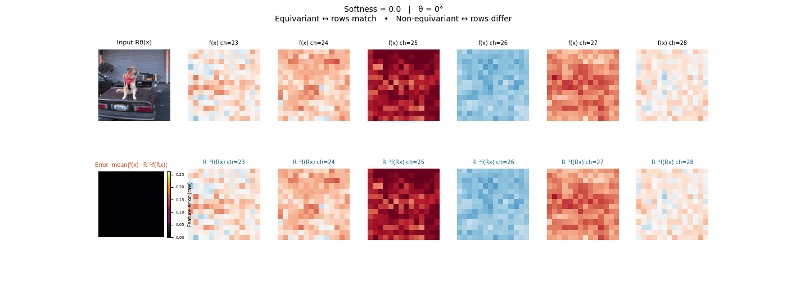
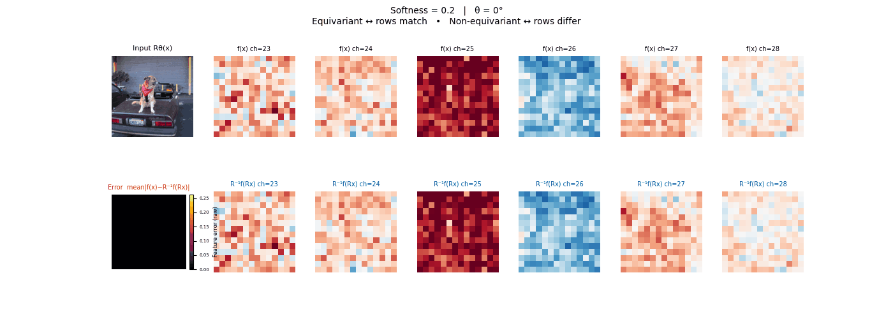
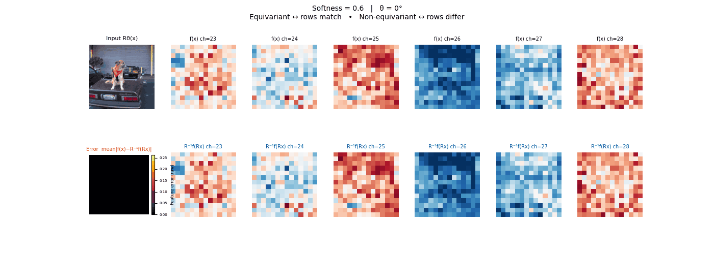
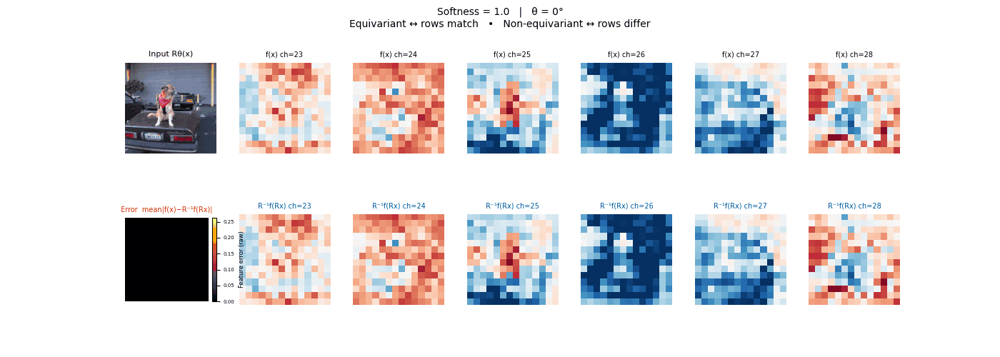

Tunable Soft Equivariance with Guarantee
A framework for injecting tunable approximate symmetry into any pretrained model. No additional parameters. Projects the weights through soft equivariant filters controlled by a single scalar b.

Two extremes, both costly
Pretrained vision models are powerful but symmetry-unaware - rotate the input and the output changes unpredictably. Strict equivariance fixes this but often imposes compute burden, does not scale and over-constraining the model in settings where only approximate symmetry holds.
Neither extreme is satisfactory: one ignores symmetry entirely; the other enforces it too rigidly at too high a cost.
Symmetry as a dial, not a switch
- Project weights via soft equivariant filters.
- Single scalar b tunes equivariance level with provable bound.
- General framework: plug-in soft equivariance for any model.
- Theoretical bounds on equivariance error controlled by b.
- Validated on ViT, DINOv2, ResNet, SegFormer; improves off-the-shelf models.
Weight projection with controllable equivariance error
A function F is equivariant to group G if it satisfies: F(ρX(g)x) = ρY(g)F(x). This constraints is satisfied by a small subspace of all possible functions, i.e., 0 equivariance error.
We build a projection operator that can project the weights of F into different subspace with different degree of equivariance error controlled by parameter b.
y = wᵀx, the Lie-algebra representation dρ(A) tells how infinitesimal
action changes the vector. Decompose dρ(A) = UΣVᵀ and
keep only directions ui with small singular values
σi < b — these are the least action-sensitive directions.
The invariant filter Binv = Σσi<b uiuiᵀ
projects w into that subspace.
y = Wx, vectorising gives the Kronecker constraint
L·vec(W) = 0 where
L = dρXᵀ ⊗ I − I ⊗ dρY.
The null space of L is the exact equivariant subspace. Equivariant filter Beq created following the same procedure as the invariant filter from L.
# Build Kronecker constraint matrix: L = dρ_Xᵀ ⊗ Id′ − Id ⊗ dρ_Y ∈ ℝ^{dd′ × dd′} # SVD of L — sort singular values ascending: U, Σ, Vᵀ = svd(L) σ₁ ≤ σ₂ ≤ … ≤ σ_{dd′} # Build projection matrix B_eq (keep σᵢ < b): B_eq = Σσᵢ < b ui uiᵀ ∈ ℝ^{dd′ × dd′}
# Flatten pretrained weights to a vector: w_flat = vec(W) W ∈ ℝ^{d′×d} → ℝ^{dd′} # Project into the equivariant subspace: w_proj = B_eq · w_flat low-sensitivity directions only # Reshape back and run the layer: W_b = reshape(w_proj, d′, d) y = W_b · x output is η-soft equivariant
The same recipe applies across architectures and groups:
FilteredConv2d, FilteredLinear). Projectors are computed once from the group structure.b ∈ [0, 1] to fix the symmetry level. Optionally fine-tune with b held fixed to recover task performance at the chosen operating point.Fast Schur Filter — Scalable Construction
The naive SVD approach for constructing equivariant projectors is intractable for large representations. Our Schur filter exploits real Schur decomposition to decouple the constraint matrix into small independent blocks — reducing cost by orders of magnitude while producing the identical projection. Below we explain the method with fully worked examples.
The scalability problem
The equivariance constraint vectorises to L · vec(Θ) = 0, where
L = dρXᵀ ⊗ I − I ⊗ dρY.
For a layer mapping d-dim input to d′-dim output, L is dd′ × dd′.
SVD of L costs O((dd′)³).
For the 4th-order tensor representation T(4) of O(5): d = 5⁴ = 625 — L would have 390,625 rows × 390,625 columns. Naive SVD is completely infeasible.
The Schur insight
dρX = UX ΣX UXᵀ and dρY = UY ΣY UYᵀwhere Σ is block-diagonal with 1×1 and 2×2 blocks. Cost: O(d³) + O(d′³).
Θ′ = UYᵀ Θ UX. The joint constraint becomes ΣYΘ′ = Θ′ΣX, where ΣX, ΣY are block-diagonal.Complexity: O(5) T(4)
For the 4th-order tensor representation of O(5), d = 625:
Both yield the identical projection matrix.
Schur decomposition — block structure
The decomposition dρ = U Σ Uᵀ reveals a block-diagonal Σ. Each 2×2 block has Schur value λ = √(a² + b²):
Real Schur Decomposition
For any real square matrix M, there exists an orthogonal U such that UᵀMU = Σ is block-diagonal with 1×1 and 2×2 blocks. The canonical 2×2 form:
From equivariance to Sylvester equation
The equivariance condition for a linear layer W requires:
↓ Apply Schur: dρX = UXΣXUXᵀ, dρY = UYΣYUYᵀ
UYΣYUYᵀ · W = W · UXΣXUXᵀ
↓ Let Θ′ = UYᵀ W UX
ΣY · Θ′ = Θ′ · ΣX ← Sylvester equation
Schur's Lemma — the block rule
Since ΣX, ΣY are block-diagonal, this decouples into independent Sylvester equations per block pair (Tl, Sk):
Θ′lk = 0 — forced to zero. No free parameters.
Θ′lk takes a constrained rotation form — 2 free parameters (α, β) per matching 2×2 pair, or 1 parameter (γ) per matching 1×1.
Soft Projection
For Blocks with λTl + λSk > : Schur lemma is followed strictly. Blocks below b remain unconstrained — equivalent to the SVD approach but computed block-by-block.
Block structure visualization
4×4 weight with two input blocks (S₁, S₂) and two output blocks (T₁, T₂):
Dense 4×4 = 16 params. Equivariant = 4 params (α₁, β₁, α₂, β₂). Block sparsity is read directly from Schur value comparisons — no large SVD.
Problem: Consider a neural network layer processing 3D point cloud data. We want this layer to be equivariant with respect to rotation about the z-axis — if the input point cloud is rotated around z, the output should rotate accordingly. The weight matrix W ∈ ℝ³ˣ³ maps 3D input vectors to 3D output vectors. The z-rotation Lie algebra generator is Az.
SVD approach
Kronecker constraint L = Azᵀ ⊗ I₃ − I₃ ⊗ Az ∈ ℝ⁹ˣ⁹:
Singular values: {0×3, 1×4, 2×2}. Null space → equivariant form:
With b = 1.5, the 7 vectors with σ ∈ {0, 1} are retained. Basis matrices V₁–V₇:
V₁–V₃: exactly equivariant (σ=0). V₄–V₇: mildly break equivariance (σ=1), coupling xy-plane to z-axis.
Schur approach (same result, faster)
Az is already in real Schur form (UX=UY=I₃). Blocks:
| Block | Size | λT+λS | T≃S? | Equivariant form |
|---|---|---|---|---|
| Θ′₁₁ | 2×2 | 2 | Yes | [[α,β],[−β,α]] |
| Θ′₁₂ | 2×1 | 1 | No | 0 |
| Θ′₂₁ | 1×2 | 1 | No | 0 |
| Θ′₂₂ | 1×1 | 0 | Yes | γ (scalar) |
Numerical projection (b = 1.5)
Θ′₁₁ has λ=2 ≥ 1.5 → symmetrized. All other blocks λ < 1.5 → unchanged.
α=(2+4)/2=3, β=(3+1)/2=2. Top-left 2×2 constrained; rest untouched.
Setup: 4D input → 4D output
Input and output Lie algebra representations share the same Schur block structure. The full Schur forms are:
Block-diagonal with two 2×2 blocks: S₁ = T₁ (Schur values a±ib) and S₂ = T₂ (Schur values c±id).
| Block | Size | Match? | Constraint |
|---|---|---|---|
| Θ′₁₁ (T₁,S₁) | 2×2 | Yes | Both a±ib → [[α₁,β₁],[−β₁,α₁]] |
| Θ′₁₂ (T₁,S₂) | 2×2 | No | a±ib vs c±id → zero |
| Θ′₂₁ (T₂,S₁) | 2×2 | No | c±id vs a±ib → zero |
| Θ′₂₂ (T₂,S₂) | 2×2 | Yes | Both c±id → [[α₂,β₂],[−β₂,α₂]] |
Resulting Θ′ (4×4) — block diagonal
Recovering W from Θ′
After constraining Θ′ to its equivariant form, recover the projected weight in the original basis:
UX, UY are the orthogonal matrices from the Schur decomposition. This basis change is computed once; the resulting W is used directly in the forward pass.
Drag each slider — watch the symmetry change
Each animation sweeps the input image through a full 360° rotation.
The top row shows fb(x) — features of the
input x. The bottom row shows Rθ−1fb(Rθx)
— the inverse rotation applied to features of the rotated input.
The bottom-left error map shows their mean discrepancy.


Final-layer feature maps under 90° rotation.


Final-layer feature maps under 90° rotation.




Final-layer feature maps under 90° rotation.
Examples: SO(3) and O(5)
The weight projection framework extends naturally to equivariant MLPs for scientific computing. Swapping in the group-specific Lie algebra generators (or forward differences for discrete groups) is all that changes.

fb(x) ≈ R−1fb(Rx)
as 3D vectors — coinciding at b = 0, diverging at b = 1.
Right: distribution of ‖R−1fb(Rx) − fb(x)‖₂
over many inputs. The mass is exactly at zero when b = 0.

|f(Rx) − f(x)| should be zero for all rotations.
At b = 0 invariance is exact. As b increases the distribution broadens
gracefully — monotonic and predictable, consistent with the theoretical bound.


Wrap any pretrained model in three lines
Specify the symmetry group and the control value b. No architecture changes, no new parameters, no modifications to the training objective.
from standalone.vit_soft_equivariance_standalone import monkeypatch_vitembeddings
from standalone.resnet_soft_equivariance_standalone import convert_cnn_to_filtered
filter_config = {
"n_rotations": 4,
"soft_thresholding": 0.2,
"soft_thresholding_pos": 0.2,
"group_type": "rotation",
}
# For ViT embeddings
monkeypatch_vitembeddings(model.vit.embeddings, filter_config)
# For CNNs
# convert_cnn_to_filtered(model, filter_config)
Standalone single-file demos are in standalone/.
Group-specific notebooks with full derivations are in notebooks/.
In code the control parameter is named softness and corresponds to b here.
See the repo for training scripts and filter factory docs.
BibTeX
If this work is useful to your research, please cite:
@InProceedings{rahman2026tunable,
author = {Rahman, Md Ashiqur and Hao, Lim Jun and Jiang, Jeremiah
and Lim, Teck-Yian and Yeh, Raymond A},
title = {Tunable Soft Equivariance with Guarantee},
booktitle = {Proceedings of the IEEE/CVF Conference on Computer
Vision and Pattern Recognition (CVPR)},
year = {2026}
}